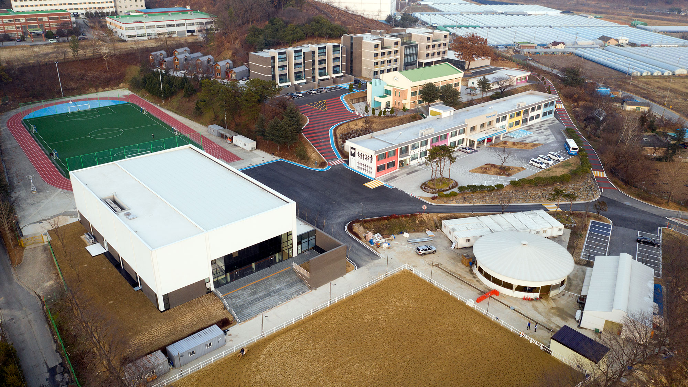

Woo Jin Shin
Home
About me
선택활동
22-1 A:Change Maker
22-2 A:Web Manager
22-1 B:홀리워크
22-2 B:End Poverty
22-2 C:Active Biblical Geology
창의활동
syntax error()
병천 독립운동거리 조성
이색활동
빚음

신우진
Dreamy 4기
MY VISION
사고하는 사람 : 자신을 객관적으로 보기 위해 매일 자신을 성찰한다.
품어주는 소통가 : 다른 사람의 의견을 편견 없이 본다.
봉사하는 사람 : 힘든 이웃을 위해 하는 일을 아까워하지 않는다.
글로벌 인재 : 내가 잘하는 것을 찾고 그 역량을 키우기 위해 노력한다.